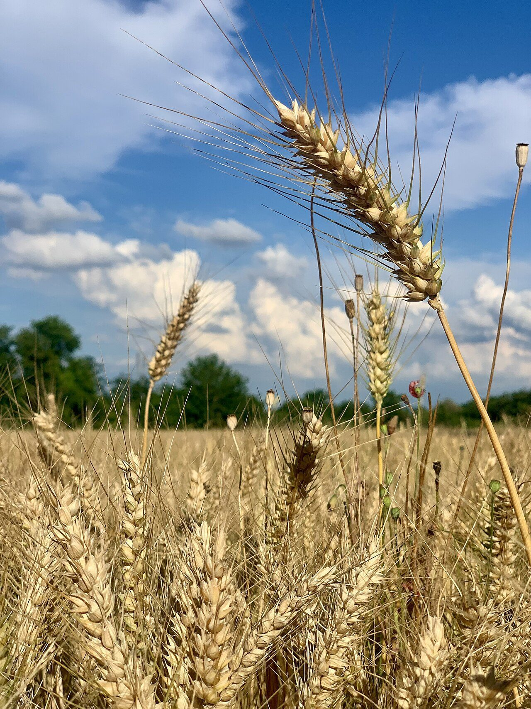
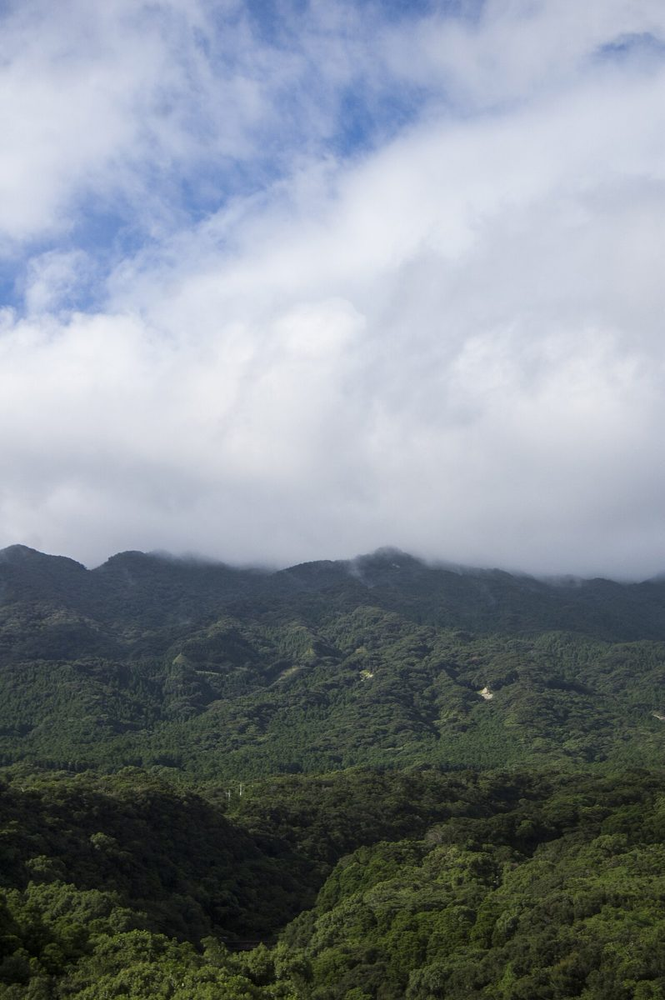
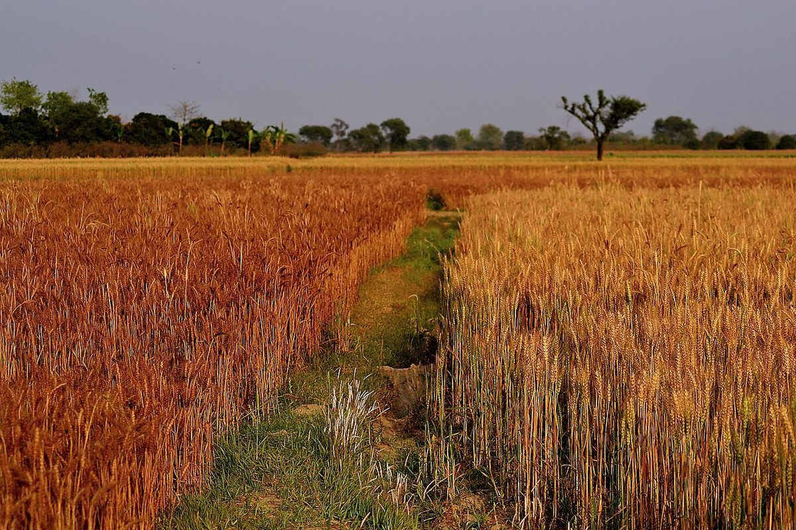

空

ひろがる空
名前の最初に置かれた「空」。高原の町では、空がいつもより大きく見えるのかもしれません。そんな広がりを思わせる言葉として読みました。
お店の名前にならぶ、三つの言葉について。
このページの文章は、お店の名前から制作側が想像して書いたものです。名前の由来や、お店の考えを示すものではありません。正式な文章は、お店からお聞きした内容に差し替えます。

名前の最初に置かれた「空」。高原の町では、空がいつもより大きく見えるのかもしれません。そんな広がりを思わせる言葉として読みました。

パンの原料になる麦は、ベーカリーにとって身近な存在です。ここでは、お店の中心にある言葉として想像しました。

八ヶ岳は、山梨県と長野県にまたがる山々の名前です。お店は山梨県北杜市にあります。写真は八ヶ岳ではなく、雲と山のイメージです。
空があって、麦があって、その向こうに山がある。名前を読むと、そんな景色がひと続きに浮かびます。この試作サイトでは、その景色を「地平線」として、ページの区切りや色に取り入れました。
写真は、他の地域・国外・撮影地不明のイメージです。実際のお店や北杜市の景色は、お店のご提供写真に差し替えられます。